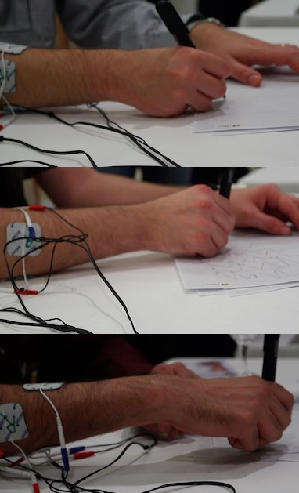
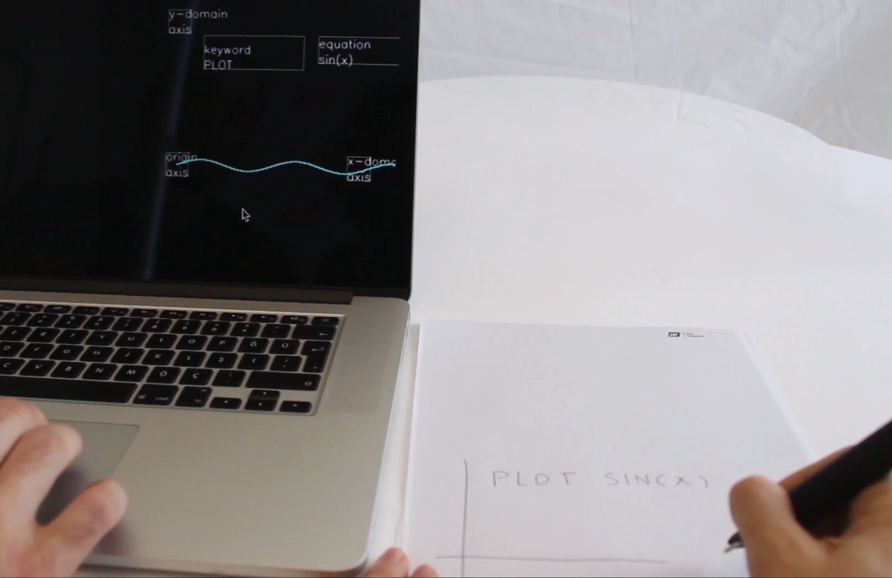

Muscle-Plotter
Table of Contents
- 1) muscle-plotter
- 2) related work
- 3) implementation
- pen and paper interface for input and output
- Anoto Pen and Paper
- HASOMED EMS Machine
- Pad Placement
- Pad Placement
- handwriting recognition and spatial interactions
- closed control loop for output
- Proportional Controller
- Muscles respond non-linearly
- Spring Mass Model
- Finding a reliable range
- On Paper
- Analysis
- Hardware Limitations
- Delay Compensation
- Designing for the Human Operator at the end of the line
- pen and paper interface for input and output
- 4) user study
- 5) application perspective pen and paper interactions
- 6) limitations and future work
- 7) Discussion?
1) muscle-plotter
- is an interactive system
- based on electrical muscle stimulation
- produces spacial output
the team and major project
uist2016

Figure 1: Demo Session
open repository
builds on previous EMS systems to create an interface that enables elaborate sense-making tasks
provides such an interface in very small form factors
2) related work
controlling hand poses
Figure 2: Possessed Hand
imposed orientation
Figure 3: Pedestrian Cruise Control
crossing interfaces for fluid interactions with a digital pen
gestures for interactive paper
3) implementation
pen and paper interface for input and output
- Hardware
- Anoto pen for paper
- electrical muscle stimulation
- Software
- control loop
- application API
Anoto Pen and Paper
Figure 4: Anoto Pen
HASOMED EMS Machine
8 Channels sharing up to 400 pulses per second
Figure 5: EMS Machine
Pad Placement
Horizontal axis
Figure 6: Left and Right
Pad Placement
Vertical axis

Figure 7: Up and Down
handwriting recognition and spatial interactions

Figure 8: Handwriting Recognition
closed control loop for output
handling non-linear response
Proportional Controller
- Only one channel is active at a given time
- signal intensity is mapped to min and max stimulation values
Muscles respond non-linearly
- chaos > control
Spring Mass Model
Figure 9: a simple model for the arm
Finding a reliable range
- Active stimulation on both sides
- randomly testing for range of values
On Paper
Figure 10: test results on paper
Analysis

Figure 11: Angle Range Analysis
Hardware Limitations
- Anoto, 70 samples each second
- 0.1 second delay
- adjust control loop to act for every 7 + ~3 Anoto samples
- more consistent speed calculations
Delay Compensation
Forward momentum
Figure 12: Control Loop in Action
Designing for the Human Operator at the end of the line
- Dynamically Increasing pulse intensity
- A dedicated channel for brake
4) user study
study preparation
- 8 participants (22-26 years of age)
- 8 preselected curves
- plotted twice in random order
study setup

Figure 13: user study setup
evaluation and results
Figure 14: Results All
error versus plot duration
Figure 15: Accuracy and duration
frequency analysis
Figure 16: Frequency Domain Analysis
5) application perspective pen and paper interactions
wind tunnel simulator
Widgets
- scale
- x-y graph
- canvas
- selectors
filter design
Figure 17: rc filter design app
optics
Figure 18: optics
math functions - plot
Figure 19: plotting math functions
math functions - get integral
Figure 20: integral of plot
multiple choice - query

Figure 21: output from multiple choice
multiple choice - select
Figure 22: input to multiple choice
bar charts

Figure 23: plot bar chart
6) limitations and future work
ems difficulties
ems machines haven't seen much improvement
7) Discussion?
Questions?